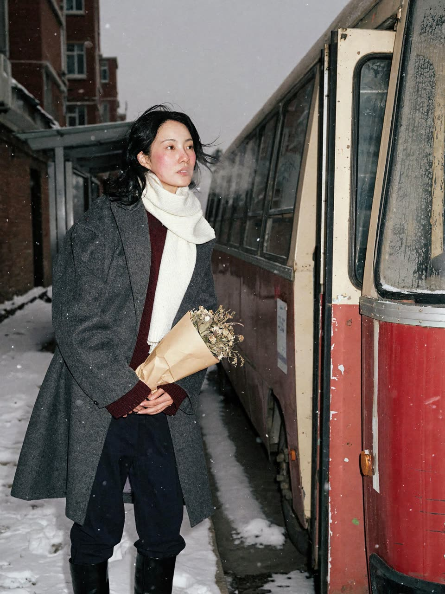

MiniMax H3 Image: early-1990s northern China winter editorial, charcoal wool coat and ivory scarf beside a cream-and-red city bus (on-camera flash, analog grain)

A period fashion editorial still: an oversized charcoal wool coat, ivory knitted scarf and burgundy ribbed sweater against an aged cream-and-red bus, snow and red-brick blocks. The lighting recipe ("Cold overcast northern daylight paired with direct on-camera flash, crisp well-lit face, deep darker background, subtle analog film grain, restrained desaturated colors") gives the flash-lit 1990s street-photo look. The prompt ends with period negatives ("No modern cars, no smartphones, no logos, no signage"). It is the creator's China restaging of @ZaraIrahh's Seedream 5.5 Soviet-bus prompt, and the stored image is the H3 Image result from a six-model comparison.
Prompt
Photorealistic fashion editorial with the atmosphere of a winter morning in early 1990s northern China, inside an old state-run work-unit residential compound. A beautiful young Chinese woman with delicate East Asian facial features stands beside the open folding doors of an aged cream-and-red Chinese domestic city bus (a typical early-1990s Chinese urban transit bus). She holds a small bouquet of dried wildflowers wrapped in vintage brown kraft paper, gently gripping it with both hands in front of her thighs. She wears an oversized charcoal wool coat, a soft ivory knitted scarf, a dark burgundy ribbed sweater, straight dark trousers and black leather winter boots. Loose straight black hair falls naturally around her face, a few strands lifted by the freezing wind. Flushed cheeks from the cold, minimal makeup, a thoughtful expression, her gaze drifting slightly past the camera, shoulders gently raised against the chill. Snow-covered pavement, compacted gray snow beside the bus wheels, frosted windows with condensation, faded red paint, weathered dull metal. In the distance, blurred red-brick socialist-style apartment blocks and a modest rusted bus shelter. Fine snowflakes drifting in the air, visible white breath. The delicate dried flowers add a subtle warm color accent against the muted cold winter surroundings. Three-quarter portrait framed from the knees up, eye-level camera, woman placed off-center, the bus filling one side of the frame. Cold overcast northern daylight paired with direct on-camera flash, crisp well-lit face, deep darker background, subtle analog film grain, restrained desaturated colors, candid early-1990s Chinese street photography crossed with luxury fashion editorial. Real skin texture, tactile soft wool, believable hands and a believable kraft-paper bouquet, shot on a 50mm lens, vertical 3:4 composition. No modern cars, no smartphones, no logos, no signage, no text, no watermark.
Our Seedance 2.5 adaptation
[ADAPTED for Seedance 2.5 by Grok Bot; not the creator's prompt. Follows the official BytePlus Seedance 2.5 prompt guide and its official sd25-pe prompt-optimizer skill: parameters only on the API line (not in the prompt body), subject + action + scene, then visuals, camera (move, subject, start, direction, arrival) and sound; only the source's own exclusions are kept.] API: duration 5, ratio adaptive, resolution 1080p, generate_audio true; first_frame = the MiniMax H3 Image bus-stop editorial still. 【Subject】The woman exactly as in the first frame: oversized charcoal wool coat, ivory knitted scarf, burgundy ribbed sweater, dried-flower bouquet in kraft paper held in both hands, beside the open folding doors of the cream-and-red bus. 【Action】She stays in place. Visible breath leaves her mouth twice; fine snowflakes drift down; a few strands of hair lift in the wind; her eyes move slowly from past the camera to the lens and back. 【Camera】Static, knees-up three-quarter framing as in the frame, a barely perceptible push in. 【Visuals】Cold overcast daylight with direct on-camera flash on her face, deep darker background, subtle analog film grain, restrained desaturated colour. No modern cars, smartphones, logos, signage or text. 【Sound】Winter wind, the bus engine idling, soft footsteps on packed snow.
Tags: period wardrobe, winter layering, on-camera flash + daylight, analog grain, 1990s street photography, knees-up three-quarter, period negatives, six-model comparison, MiniMax H3 Image